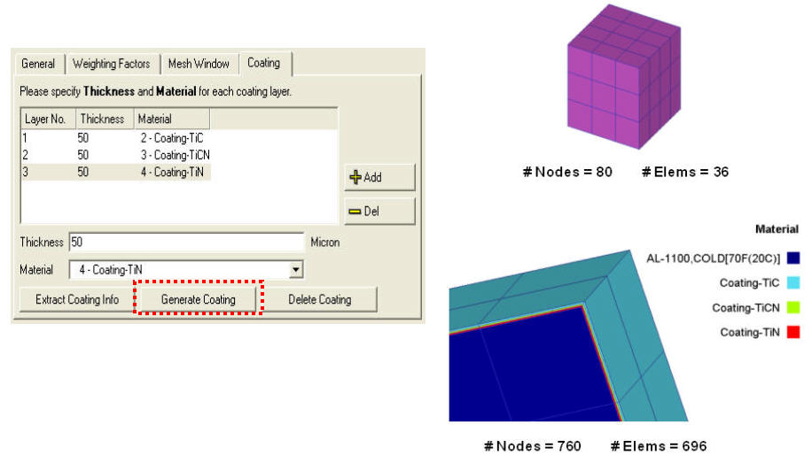
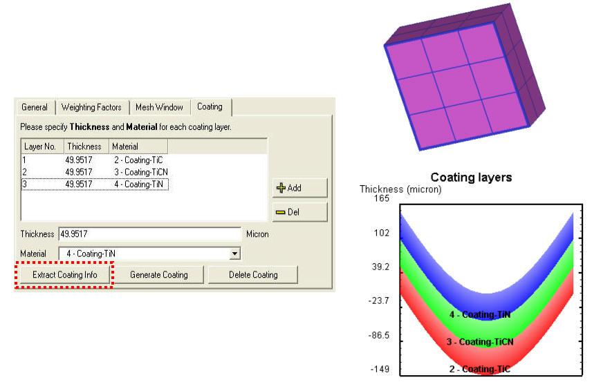
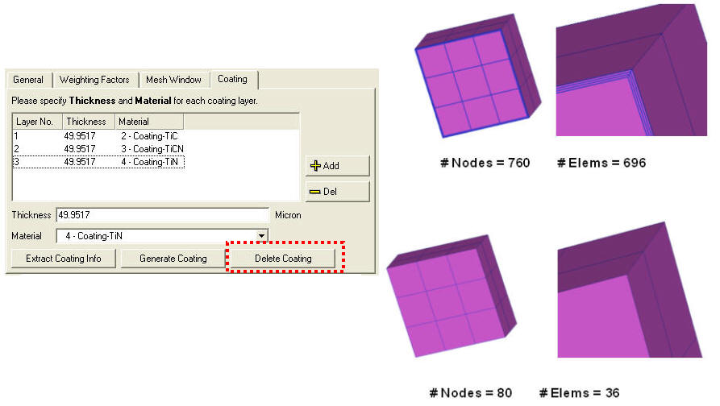
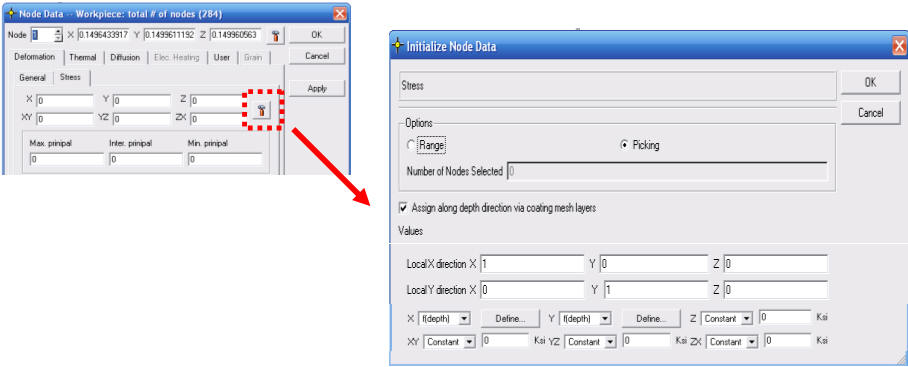
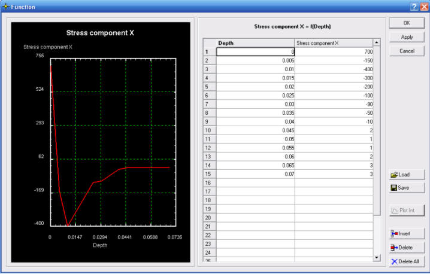
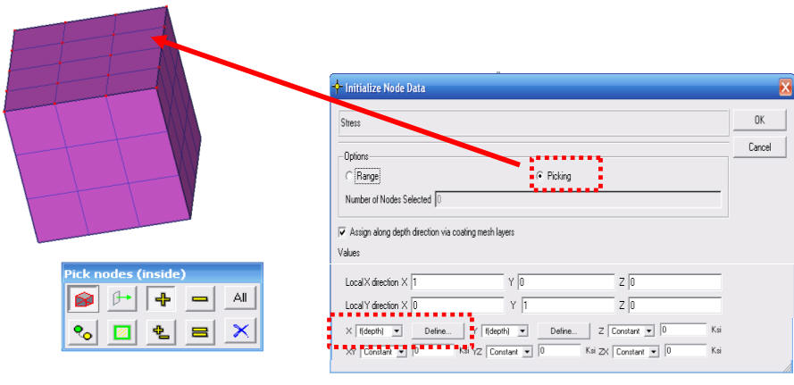
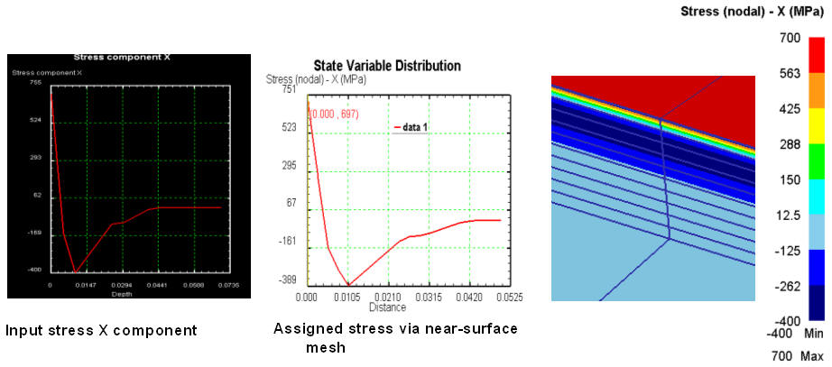
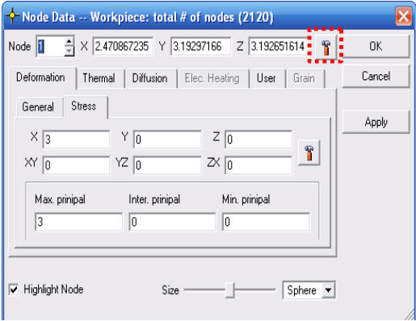
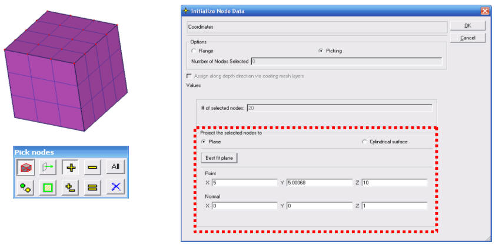

*From QT3 interface
Near surface mesh functions are generated to provide or simulate the intricate details of the surface . The user can generate, extract and delete the near - surface information for both Tet mesh and brick mesh using the coating window option in mesh generation page: (See Fig. AXI.1., Fig. AXI.2. and Fig. AXI.3.)

Generation of near - surface mesh (brick)

Extraction of near - surface mesh (brick)

Deletion of near - surface mesh (brick)
The user can assign residual stress via near-surface mesh using the Element + Node definition for stress
( Simulation Control / Advanced / Output Control ), which is accessible in node data dialog. (See Fig. AXI.4. and Fig. AXI.5.)

Node Data window

Defining residual stress as a function of depth
Pick surface nodes in specified area and assign the residual stress via near-surface mesh layers. (See Fig. AXI.6.)

Picking surface node to assign residual stress
This shows the stress assigned using the Post-processor function (SV between two points) as shown in Fig. AXI.7.

Assigned stress via near surface mesh in Post processor
Problem faced to move nodes onto reference surface:
For CMM measurement of distortion results, it is common to analyze the results using the deviation form a best fit surface
The distortion value is generally small
The starting mesh surface is generally not on the perfect surface due to discretization error
The discretization errors of the mesh surface may overwhelm the distortion values
In order to compare the simulation results to the CMM measurement results directly, it is necessary to move certain nodes onto a reference surface
The function is accessible in the node data dialog as shown in below Fig. AXI.8.

Node data window
Define the reference surface (either planar or cylindrical surface) by best fit to selected nodes or user input the surface definition. Then, the selected nodes are moved onto the reference surface (See Fig. AXI.9.)

Projecting the selected nodes onto the surface
Related Topics: